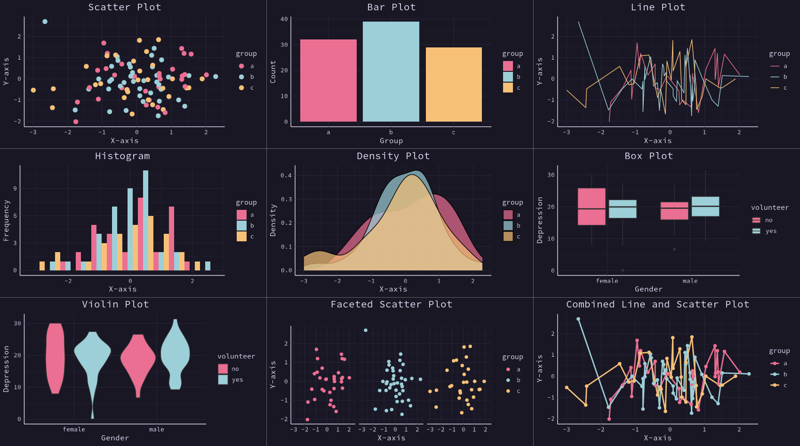
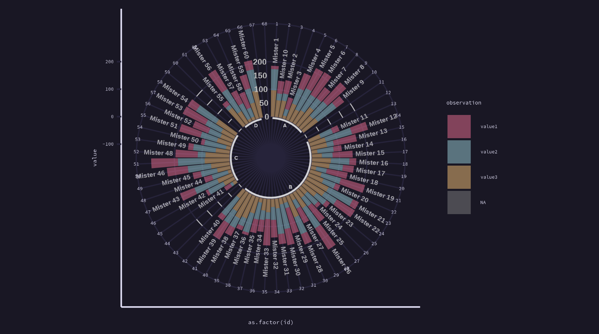
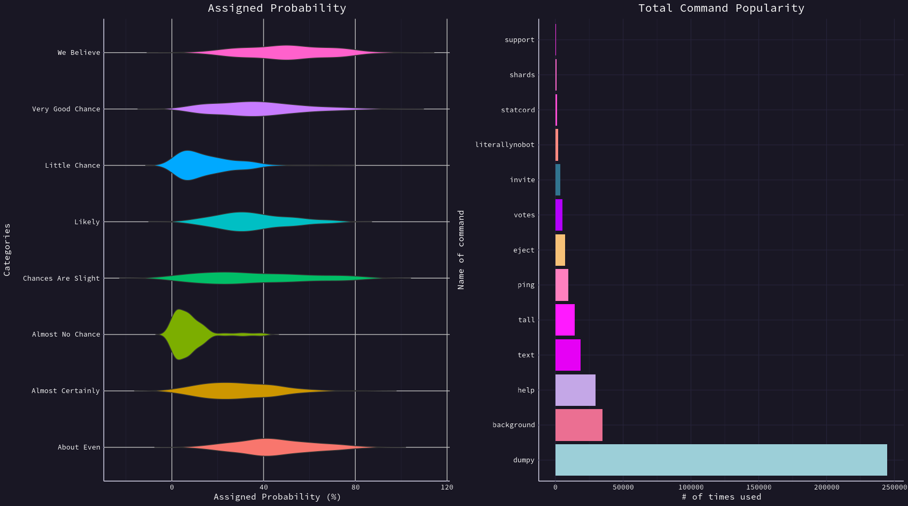
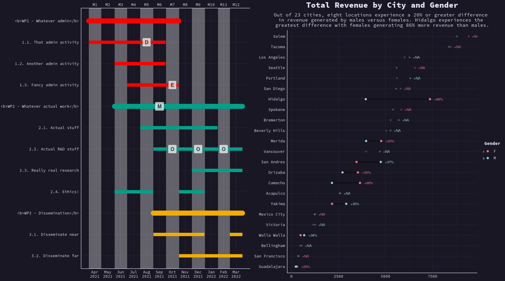
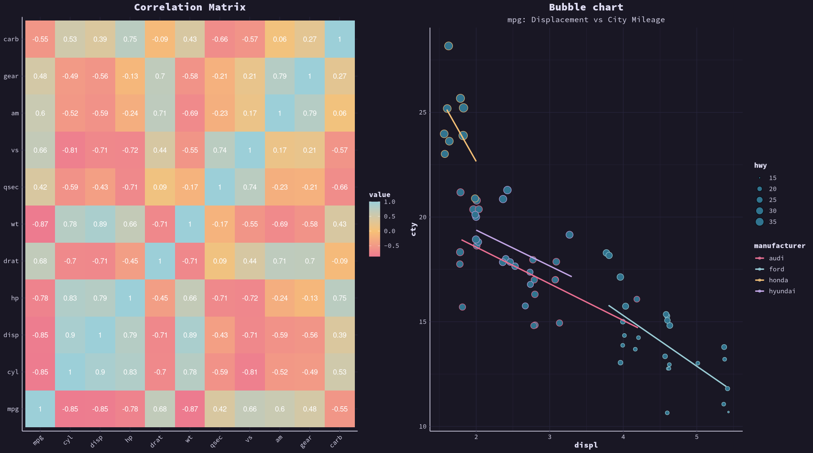
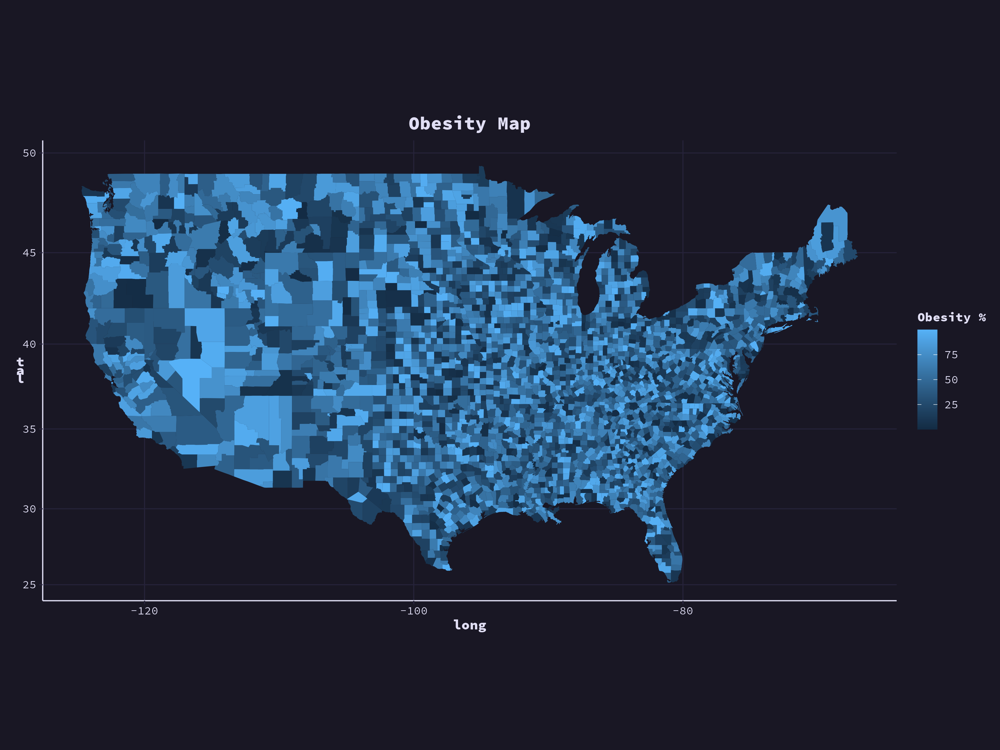

Introduction
The Rose Pine Theme for R is a custom ggplot2 theme
inspired by the Rose Pine Theme from Python, designed to provide a calm,
modern aesthetic for your visualizations. The theme incorporates the
signature colors and styling of the Rose Pine color palette while adding
improvements and customizations for use in R-based data visualizations.
This theme is perfect for creating plots with a soothing, minimalist design that is easy on the eyes, while maintaining a professional look for your data visualizations.
Credits: Inspired by the Python-based (Rose Pine Theme).
Project Repository
You can access the Rose Pine Theme for R project repository on GitHub here:
Rose Pine Theme for R
(https://github.com/msjahid/rosepine-theme).
Feel free to explore, contribute, or fork the repository!
Installation
-
Install Dependencies:
Ensure you have the
ggplot2package installed, as this theme is based on it.install.packages("ggplot2")- Install the Rose Pine Theme for R:
You can download the theme directly from the GitHub repository. If you don't have the
devtoolspackage installed, you can install it first:install.packages("devtools")Then, use
devtoolsto install the Rose Pine Theme for R from the GitHub repository:devtools::install_github("msjahid/rosepine-theme")Create an Issue
If you encounter any bugs, have suggestions, or want to request new features,
please feel free to open an issue on the project's GitHub repository.
Your feedback is greatly appreciated!
To create an issue, visit the following link: [Rose Pine Theme for R - GitHub Issues]Usage
After installing the Rose Pine Theme for R, you can easily apply it to your
ggplot2plots. Here's how to use the theme in your R code.Basic Example
library(ggplot2) library(rosepineTheme) # Test Dataset set.seed(42) test_data <- data.frame( x = rnorm(100), y = rnorm(100), group = sample(letters[1:3], 100, replace = TRUE) ) # Create a sample data frame set.seed(42) # For reproducibility # Sample data with gender, depression score, and volunteer status city_gender_rev <- data.frame( sex = rep(c("female", "male"), times = 50), # Gender (sex) column depression = c(rnorm(50, mean = 20, sd = 5), rnorm(50, mean = 18, sd = 6)), # Depression scores volunteer = sample(c("yes", "no"), 100, replace = TRUE) # Volunteer status ) # 1. Scatter Plot scatter_plot <- ggplot(test_data, aes(x = x, y = y, color = group)) + geom_point(size = 3) + labs(title = "Scatter Plot", x = "X-axis", y = "Y-axis") + theme_rose_pine() + scale_color_rose_pine() # 2. Bar Plot bar_plot <- ggplot(test_data, aes(x = group, fill = group)) + geom_bar() + labs(title = "Bar Plot", x = "Group", y = "Count") + theme_rose_pine() + scale_fill_rose_pine() # 3. Line Plot line_plot <- ggplot(test_data, aes(x = x, y = y, color = group)) + geom_line() + labs(title = "Line Plot", x = "X-axis", y = "Y-axis") + theme_rose_pine() + scale_color_rose_pine() # 4. Histogram histogram_plot <- ggplot(test_data, aes(x = x, fill = group)) + geom_histogram(binwidth = 0.5, position = "dodge") + labs(title = "Histogram", x = "X-axis", y = "Frequency") + theme_rose_pine() + scale_fill_rose_pine() # 5. Density Plot density_plot <- ggplot(test_data, aes(x = x, fill = group)) + geom_density(alpha = 0.7) + labs(title = "Density Plot", x = "X-axis", y = "Density") + theme_rose_pine() + scale_fill_rose_pine() # 6. Box Plot # Create a box plot box_plot <- ggplot(city_gender_rev, aes(x = sex, y = depression, fill = volunteer)) + geom_boxplot() + labs(title = "Box Plot", x = "Gender", y = "Depression") + scale_fill_manual(values = c("no" = "#eb6f92", "yes" = "#9ccfd8")) + theme_minimal(base_size = 14) + theme_rose_pine() + scale_color_rose_pine() # 7. Violin Plot # Create a violin plot violin_plot <- ggplot(city_gender_rev, aes(x = sex, y = depression, fill = volunteer)) + geom_violin() + labs(title = "Violin Plot", x = "Gender", y = "Depression") + scale_fill_manual(values = c("no" = "#eb6f92", "yes" = "#9ccfd8")) + theme_minimal(base_size = 14) + theme_rose_pine() + scale_color_rose_pine() # 8. Faceted Scatter Plot faceted_plot <- ggplot(test_data, aes(x = x, y = y, color = group)) + geom_point(size = 2) + facet_wrap(~group) + labs(title = "Faceted Scatter Plot", x = "X-axis", y = "Y-axis") + theme_rose_pine() + scale_color_rose_pine() # 9. Combined Multiple Lines Plot combined_plot <- ggplot(test_data, aes(x = x, y = y, color = group)) + geom_line(size = 1) + geom_point(size = 2) + labs(title = "Combined Line and Scatter Plot", x = "X-axis", y = "Y-axis") + theme_rose_pine() + scale_color_rose_pine() # Display All Plots library(gridExtra) grid.arrange( scatter_plot, bar_plot, line_plot, histogram_plot, density_plot, box_plot, violin_plot, faceted_plot, combined_plot, ncol = 3 )library(readxl) # for reading in Excel data library(dplyr) # for data manipulation library(tidyr) # for data shaping library(ggplot2) # for generating the visualizations library(rosepineTheme) library(gridExtra) # Common Theme and Scales common_theme <- theme_rose_pine() common_color_scale <- scale_color_rose_pine() common_fill_scale <- scale_fill_rose_pine() supermarket <- read_excel("/home/msjahid/Downloads/Supermarket Transactions.xlsx", sheet = "Data") city_rev <- supermarket %>% group_by(City) %>% summarise(Revenue = sum(Revenue, na.rm = TRUE)) %>% arrange(Revenue) %>% mutate(City = factor(City, levels = .$City)) city_gender_rev <- supermarket %>% group_by(City, Gender) %>% summarise(Revenue = sum(Revenue, na.rm = TRUE)) %>% ungroup() %>% mutate(City = factor(City, levels = city_rev$City)) # First plot with legend at the top plot1 <- ggplot(city_gender_rev, aes(City, Revenue, fill = Gender)) + geom_bar(stat = "identity") + coord_flip() + theme_rose_pine() + # Apply the custom theme scale_fill_rose_pine() + # Apply the fill color scale theme(legend.position = "top") # Move the legend to the top # Second plot with legend at the top plot2 <- ggplot(city_gender_rev, aes(City, Revenue, fill = Gender)) + geom_bar(stat = "identity", position = "dodge") + coord_flip() + theme_rose_pine() + # Apply the custom theme scale_fill_rose_pine() + # Apply the fill color scale theme(legend.position = "top") # Move the legend to the top # Third plot with legend at the top plot3 <- ggplot(city_gender_rev, aes(City, Revenue, fill = Gender)) + geom_bar(stat = "identity", position = "dodge") + coord_flip() + facet_wrap(~ Gender) + theme_rose_pine() + # Apply the custom theme scale_fill_rose_pine() + # Apply the fill color scale theme(legend.position = "top") # Move the legend to the top # Arrange the plots in one row with legends at the top grid.arrange(plot1, plot2, plot3, ncol = 3)
library(ggplot2) # for generating the visualizations library(rosepineTheme) # Create dataset data <- data.frame( individual = paste("Mister ", seq(1, 60), sep = ""), group = factor(c(rep('A', 10), rep('B', 30), rep('C', 14), rep('D', 6))), value1 = sample(seq(10, 100), 60, replace = TRUE), value2 = sample(seq(10, 100), 60, replace = TRUE), value3 = sample(seq(10, 100), 60, replace = TRUE) ) # Transform data in a tidy format (long format) data <- data %>% gather(key = "observation", value = "value", -c(1, 2)) # Set a number of 'empty bar' to add at the end of each group empty_bar <- 2 nObsType <- nlevels(as.factor(data$observation)) to_add <- data.frame(matrix(NA, empty_bar * nlevels(data$group) * nObsType, ncol(data))) colnames(to_add) <- colnames(data) to_add$group <- rep(levels(data$group), each = empty_bar * nObsType) data <- rbind(data, to_add) data <- data %>% arrange(group, individual) data$id <- rep(seq(1, nrow(data) / nObsType), each = nObsType) # Get the name and the y position of each label label_data <- data %>% group_by(id, individual) %>% summarise(tot = sum(value), .groups = "drop") # Add .groups = "drop" to ungroup number_of_bar <- nrow(label_data) angle <- 90 - 360 * (label_data$id - 0.5) / number_of_bar # Adjust angle calculation label_data$hjust <- ifelse(angle < -90, 1, 0) label_data$angle <- ifelse(angle < -90, angle + 180, angle) # Prepare a data frame for base lines base_data <- data %>% group_by(group) %>% summarize(start = min(id), end = max(id) - empty_bar) %>% rowwise() %>% mutate(title = mean(c(start, end))) # Prepare a data frame for grid (scales) grid_data <- base_data grid_data$end <- grid_data$end[c(nrow(grid_data), 1:nrow(grid_data) - 1)] + 1 grid_data$start <- grid_data$start - 1 grid_data <- grid_data[-1,] # Create the plot p <- ggplot(data) + geom_bar(aes(x = as.factor(id), y = value, fill = observation), stat = "identity", alpha = 0.5) + geom_segment(data = grid_data, aes(x = end, y = 0, xend = start, yend = 0), colour = "gray", alpha = 1, linewidth = 0.3, inherit.aes = FALSE) + geom_segment(data = grid_data, aes(x = end, y = 50, xend = start, yend = 50), colour = "gray", alpha = 1, linewidth = 0.3, inherit.aes = FALSE) + geom_segment(data = grid_data, aes(x = end, y = 100, xend = start, yend = 100), colour = "gray", alpha = 1, linewidth = 0.3, inherit.aes = FALSE) + geom_segment(data = grid_data, aes(x = end, y = 150, xend = start, yend = 150), colour = "gray", alpha = 1, linewidth = 0.3, inherit.aes = FALSE) + geom_segment(data = grid_data, aes(x = end, y = 200, xend = start, yend = 200), colour = "gray", alpha = 1, linewidth = 0.3, inherit.aes = FALSE) + ggplot2::annotate("text", x = rep(max(data$id), 5), y = c(0, 50, 100, 150, 200), label = c("0", "50", "100", "150", "200"), color = "gray", size = 6, angle = 0, fontface = "bold", hjust = 1) + ylim(-150, max(label_data$tot, na.rm = TRUE)) + theme_rose_pine() + scale_fill_rose_pine() + coord_polar() + geom_text(data = label_data, aes(x = id, y = tot + 10, label = individual, hjust = hjust), color = "white", fontface = "bold", alpha = 0.6, size = 5, angle = label_data$angle, inherit.aes = FALSE) + geom_segment(data = base_data, aes(x = start, y = -5, xend = end, yend = -5), colour = "white", alpha = 0.8, size = 0.6, inherit.aes = FALSE) + geom_text(data = base_data, aes(x = title, y = -18, label = group), hjust = c(1, 1, 0, 0), colour = "white", alpha = 0.8, size = 4, fontface = "bold", inherit.aes = FALSE) + # Remove circle numbers theme( axis.text.x = element_blank(), # Remove the numbers (1 to 68) axis.ticks.x = element_blank() # Optionally, remove ticks on the radial axis ) # Save at png ggsave("polar_plot.png", plot = p, bg = "#191724", width = 12, height = 9, dpi = 300)# Required Libraries library(ggplot2) library(dplyr) library(tidyr) library(rosepineTheme) library(gridExtra) # Create dataset (assuming probability values for each category) set.seed(42) # For reproducibility data1 <- data.frame( category = rep(c("Almost Certainly", "Very Good Chance", "We Believe", "Likely", "About Even", "Little Chance", "Chances Are Slight", "Almost No Chance"), each = 100), probability = c(rbeta(100, 2, 5) * 100, rbeta(100, 2, 3) * 100, rbeta(100, 3, 3) * 100, rbeta(100, 3, 5) * 100, rbeta(100, 4, 5) * 100, rbeta(100, 1, 5) * 100, rbeta(100, 1, 2) * 100, rbeta(100, 1, 10) * 100) ) # Create the dataset (command names and their popularity counts) data2 <- data.frame( command = c("dumpy", "background", "help", "text", "tall", "ping", "eject", "votes", "invite", "literallynobot", "statcord", "shards", "support"), popularity = c(244697, 34850, 29797, 18775, 14253, 9500, 7200, 5400, 3600, 1985, 1100, 750, 540) ) # Plot 1 - Violin Plot plot1 <- ggplot(data1, aes(x = probability, y = category, fill = category)) + geom_violin(trim = FALSE) + theme_rose_pine() + # Apply the Rosé Pine theme theme( axis.title.x = element_text(size = 12, color = "white"), axis.title.y = element_text(size = 12, color = "white"), axis.text.x = element_text(size = 10, color = "white"), axis.text.y = element_text(size = 10, color = "white"), panel.grid.major = element_line(color = "gray", size = 0.5), plot.title = element_text(size = 16, color = "white", face = "bold", hjust = 0.5) ) + labs( title = "Assigned Probability", x = "Assigned Probability (%)", y = "Categories" ) + theme(legend.position = "none") # Remove legend, if not required # Create a plot with dynamic colors plot2 <- ggplot(data2, aes(x = reorder(command, -popularity), y = popularity, fill = command)) + geom_bar(stat = "identity") + coord_flip() + # Flip the coordinates for horizontal bars ggtitle("Total Command Popularity") + xlab("Name of command") + ylab("# of times used") + theme_rose_pine() + # Apply the Rosé Pine theme scale_fill_rose_pine() + # Apply dynamic color palette theme( axis.text.x = element_text(color = "white"), axis.text.y = element_text(color = "white"), plot.title = element_text(color = "white", size = 16, face = "bold"), axis.title = element_text(color = "white"), panel.grid = element_line(color = "grey30"), legend.position = "none" # Remove legend ) # Display All Plots in a Single Row grid.arrange(plot1, plot2, ncol = 2) # Set ncol = 2 for side-by-side display# Required Libraries library(ganttrify) library(ggplot2) # for generating the visualizations library(rosepineTheme) # Assuming you've already defined this theme library(readxl) # for reading in Excel data library(dplyr) # for data manipulation library(tidyr) # for data shaping library(gridExtra) # Common Theme and Scales common_theme <- theme_rose_pine() common_color_scale <- scale_color_rose_pine() common_fill_scale <- scale_fill_rose_pine() supermarket <- read_excel("/home/msjahid/Downloads/Supermarket Transactions.xlsx", sheet = "Data") city_rev <- supermarket %>% group_by(City) %>% summarise(Revenue = sum(Revenue, na.rm = TRUE)) %>% arrange(Revenue) %>% mutate(City = factor(City, levels = .$City)) city_gender_rev <- supermarket %>% group_by(City, Gender) %>% summarise(Revenue = sum(Revenue, na.rm = TRUE)) %>% ungroup() %>% mutate(City = factor(City, levels = city_rev$City)) big_diff <- city_gender_rev %>% spread(Gender, Revenue) %>% group_by(City) %>% mutate(Max = max(F, M), Min = min(F, M), Diff = Max / Min - 1) %>% arrange(desc(Diff)) %>% filter(Diff > .2) highlight <- filter(city_gender_rev, City %in% big_diff$City) # create a new label data frame right_label <- city_gender_rev %>% group_by(City) %>% arrange(desc(Revenue)) %>% top_n(1) plot_label <- big_diff %>% select(City, Revenue = Max, Diff) %>% right_join(right_label) # Create Gantt chart and apply Rosé Pine theme plot1 <- ganttrify( project = ganttrify::test_project, spots = ganttrify::test_spots, project_start_date = "2021-04", spot_size_text_relative = 1.5, spot_fill = ggplot2::alpha(c("white"), 0.7), spot_padding = ggplot2::unit(0.4, "lines") ) + theme_rose_pine() + # Apply the Rosé Pine theme theme( legend.position = "none" # Remove the legend completely ) plot2 <- ggplot(city_gender_rev, aes(Revenue, City)) + geom_line(aes(group = City), alpha = .3) + geom_point(aes(color = Gender), size = 1.5, alpha = .3) + labs(title = "Total Revenue by City and Gender", subtitle = "Out of 23 cities, eight locations experience a 20% or greater difference \nin revenue generated by males versus females. Hidalgo experiences the \ngreatest difference with females generating 86% more revenue than males.") + geom_line(data = highlight, aes(group = City)) + geom_point(data = highlight, aes(color = Gender), size = 2) + geom_text(data = plot_label, aes(color = Gender, label = paste0("+", scales::percent(round(Diff, 2)))), size = 3, hjust = -.5)+ theme_rose_pine() + scale_color_rose_pine() + scale_fill_rose_pine() + theme(axis.title = element_blank(), plot.title = element_text(size = 20, margin = margin(b = 10)), plot.caption = element_text(size = 8, margin = margin(t = 10), color = "grey70", hjust = 0)) # Display All Plots in a Single Row grid.arrange(plot1, plot2, ncol = 2) # Set ncol = 2 for side-by-side display# Required Libraries library(ggplot2) library(reshape2) library(RColorBrewer) library(rosepineTheme) # Calculate Correlation Matrix M <- cor(mtcars) data(mpg, package="ggplot2") # Melt the correlation matrix to long format M_melted <- melt(M) # Create a ggplot-based correlation matrix plot with Rosé Pine theme plot1 <- ggplot(M_melted, aes(Var1, Var2, fill = value)) + geom_tile() + # Tile for the correlation values geom_text(aes(label = round(value, 2)), color = "white", size = 4) + # Add correlation coefficients on tiles scale_fill_gradient2(low = rose_pine_colors$accent1, high = rose_pine_colors$accent2, mid = rose_pine_colors$accent3, midpoint = 0) + # Color scale theme_rose_pine(base_size = 12) + # Apply the Rosé Pine theme theme( axis.text.x = element_text(angle = 45, hjust = 1), # Rotate x-axis labels axis.text.y = element_text(size = 10), # Y-axis text size axis.title = element_blank(), # Remove axis titles panel.grid = element_blank() # Remove grid lines ) + ggtitle("Correlation Matrix") # Add plot title mpg_select <- mpg[mpg$manufacturer %in% c("audi", "ford", "honda", "hyundai"), ] plot2 <- ggplot(mpg_select, aes(displ, cty)) + labs(subtitle="mpg: Displacement vs City Mileage", title="Bubble chart") + theme_rose_pine() + scale_color_rose_pine() + scale_fill_rose_pine() + geom_jitter(aes(col=manufacturer, size=hwy), shape = 21, fill = "#31748f") + geom_smooth(aes(col=manufacturer), method="lm", se=F) # Display All Plots in a Single Row grid.arrange(plot1, plot2, ncol = 2) # Set ncol = 2 for side-by-side displaylibrary(ggplot2) library(rosepineTheme) library(data.table) library(maps) # Set seed for reproducibility set.seed(1) # Prepare the map data for counties map.county <- map_data('county') counties <- unique(map.county[,5:6]) # Create the obesity_map with random data obesity_map <- data.frame(state_names = counties$region, county_names = counties$subregion, obesity = runif(nrow(counties), min = 0, max = 100)) # Use data.table for faster merging map.county <- data.table(map_data('county')) setkey(map.county, region, subregion) obesity_map <- data.table(obesity_map) setkey(obesity_map, state_names, county_names) # Merge the data map.df <- map.county[obesity_map] # Create the plot with Rosé Pine theme map <- ggplot(map.df, aes(x = long, y = lat, group = group, fill = obesity)) + geom_polygon() + coord_map() + theme_rose_pine() + # Apply Rosé Pine theme labs(title = "Obesity Map", fill = "Obesity %") # Adding title and fill legend label # Save at png ggsave("map.png", plot = map, bg = "#191724", width = 12, height = 9, dpi = 300) - Install the Rose Pine Theme for R: